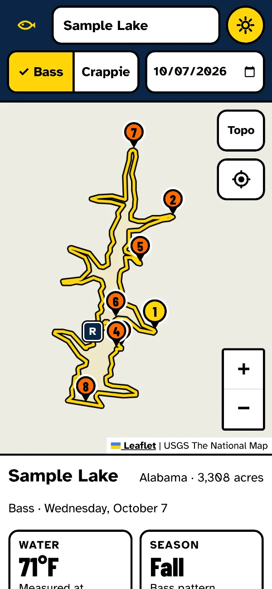
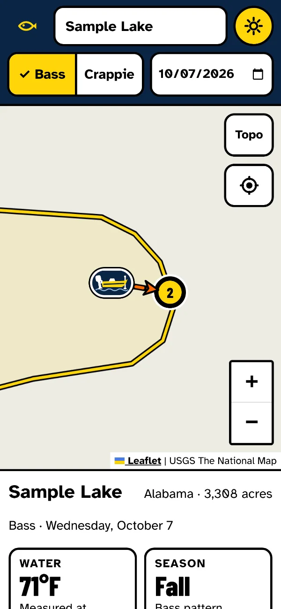
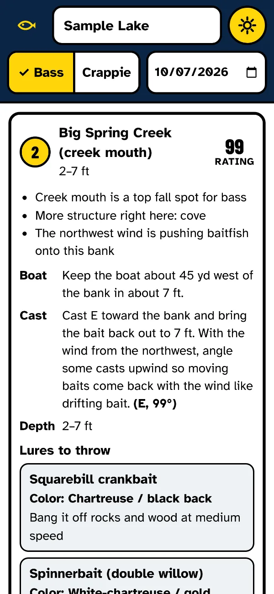
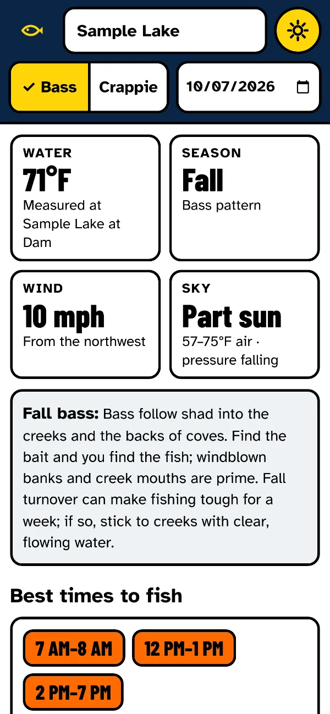
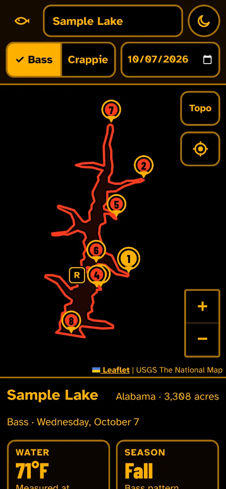

Spots on the map
Numbered spots where fish should be holding that day: points, coves, creek mouths, bridges, docks, dams and islands, ranked for your species and the season.
Bass and crappie · Any lake in the USA
Search your lake, pick bass or crappie and a date. Allen Fish Finder marks the spots on the map and tells you when to fish them and how: the lure, where to put the boat and which way to cast.
Free in your phone's browser during early access. App Store and Google Play versions are coming.

For largemouth, smallmouth and spotted bass, and crappie, on any named lake or reservoir in the USA.
Numbered spots where fish should be holding that day: points, coves, creek mouths, bridges, docks, dams and islands, ranked for your species and the season.
An hour-by-hour bite chart from sunrise and sunset, the moon's major and minor periods, cloud cover, wind and pressure changes.
The lure and color, how to work it and at what depth, where to put the boat, and which way to cast.
Big, high-contrast type and buttons you can hit with wet hands. After sunset it turns red and amber to save your night vision.
Water temperature from the nearest USGS gauge when the lake has one, the season pattern it points to, and the wind and weather forecast up to 15 days out.
Directions to the boat ramp and to each spot, and one tap to recent videos, angler posts and fishing reports for your lake.
Type a few letters of any lake or reservoir in the USA.
Today or your trip day. Dates up to 15 days out use the weather forecast.
See why fish should be there, the best hours, and exactly how to fish it.
These screens show a sample lake.




Allen Fish Finder puts public data together with well-known seasonal patterns for each species.
It's a forecast, not a promise: fish move. Use it as your plan for the day and adjust to what you find on the water.